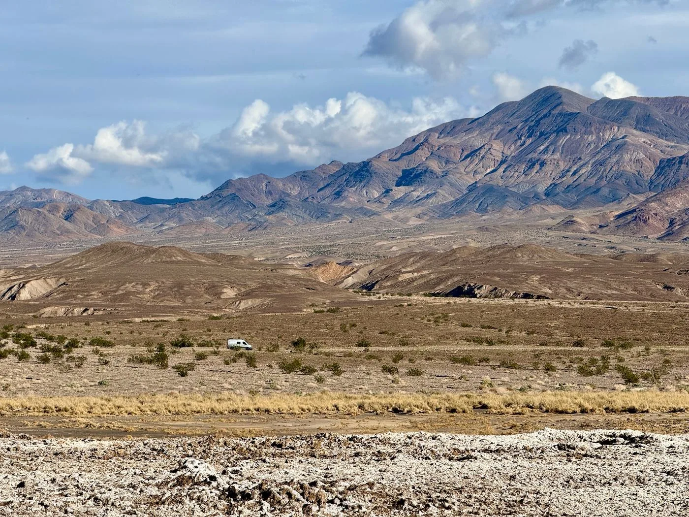

The road ahead / Departing October 18, 2026
Transcontinental Odyssey
Our current chapter: A one-year, 50,000 mile loop around the US and Canada
Preparing to depart
Room to change
our minds.
A much larger year-long journey, with Key West and Deadhorse as two of its defining destinations.
Our next chapter is the Transcontinental Odyssey: a roaming, slow-travel journey built around public land, overlooked towns, family, friends, and the freedom to change our minds.
- Southern marker
- Key West, Florida
- Northern marker
- Deadhorse, Alaska
- Planned departure
- October 18, 2026
- Home on the road
- PourHouse

The journey journal
Dispatches from the road
Want to hear from us when there’s something new from the Transcontinental Odyssey?
Send Us a NoteSay hello and we’ll add you to our road-dispatch list.